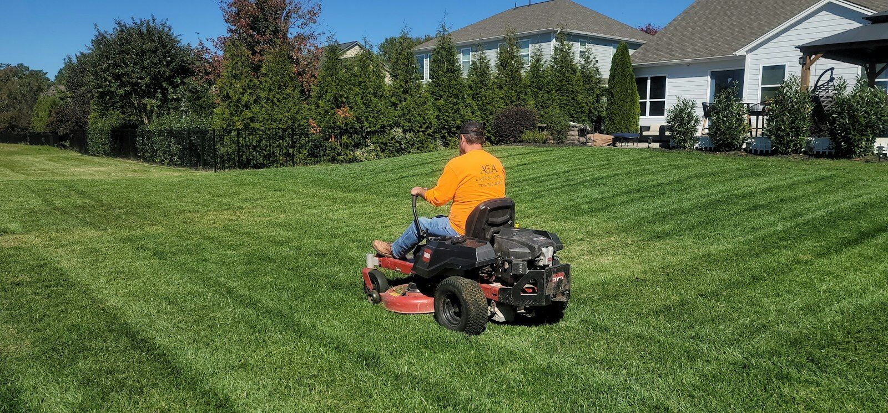

Robot versus zero-turn: the real coverage maths
Robotic mower vs zero turn: a zero turn covers more per hour. The robot wins on hours it can run and frees skilled people. Honest limits both ways.

Does a robot mower cover more ground than a zero-turn?
Not per hour. A wide-deck zero-turn with an operator on it puts down more ground in an hour than a 48-inch tracked RTK mower does, and we'd rather say that plainly than dress it up.
Per hour is the wrong unit
A zero-turn's coverage depends on deck width and operator. Wider deck and faster ground speed means more acres an hour, and on open ground a good operator will keep that up all day.
The machine does about 8 acres (3 hectares) a day. That's our planning figure and we don't move it.
Here's the part that gets skipped in the comparison. The zero-turn covers ground while someone is sitting on it. The machine covers ground while nobody is.
Hours and consistency
RTK and LiDAR don't need daylight. The machine can run through the evening, through the night, and be partway through the next block before anyone turns up in the morning. We've written elsewhere about why the best time to mow a solar farm is 2am.
A zero-turn runs for the hours a person is on it. That's a real limit and a fair one. People have to go home.
What the person does instead
The machine doesn't do all of it. Close-in work around posts, structures and edges is 60 to 70 percent autonomous at best, and people finish the rest. Someone still sets the machine up, moves it between blocks, keeps the decks right and sorts it out when it stops.
That's a skilled local technician role. The difference is where the hours land: less time driving in straight lines, more time on the work that needs judgement.
The machine cuts the same line at 6am and at 6pm. It doesn't get tired at the end of a long block, doesn't cut wide on the last pass and doesn't rush a Friday afternoon. That matters more across a repeating cycle than it does on a single visit.
Where the robot loses
Dense summer grass over 300 mm roughly halves speed. Both machine types. The machine gets no exemption.
Small blocks where transport and setup eat the day. Tight, cluttered ground with a lot of edge relative to open area. Jobs that need finishing today, once, and never again. On those a zero-turn with a good operator is the right tool, and we'd tell you so.
Our model is to operate machines where there's enough planned, repeating work to be worth the setup. Not everywhere.
Common questions
How many acres a day can an autonomous mower do?
We plan on about 8 acres (3 hectares) a day per machine. Dense summer grass over 300 mm roughly halves that.
Can it really run at night?
Yes. RTK positioning and LiDAR don't need daylight. The machine keeps working after the crew has gone home.
Does it replace the ride-on?
No. It takes the open repeatable passes. A zero-turn still earns its place on small, cluttered or one-off jobs.
What about edges and posts?
People do those. Close-in work runs 60 to 70 percent autonomous and the rest is finished by hand.
Read next
Related: Eight acres a day. Not twelve., A week a month on the slasher and Autonomous Mowing vs Traditional Ride-On: A Property Owner's Guide.
AutoAcre is an autonomous mowing operator based in the Northern Rivers, NSW, focused on solar-farm and commercial vegetation management. ben@autoacre.com.au